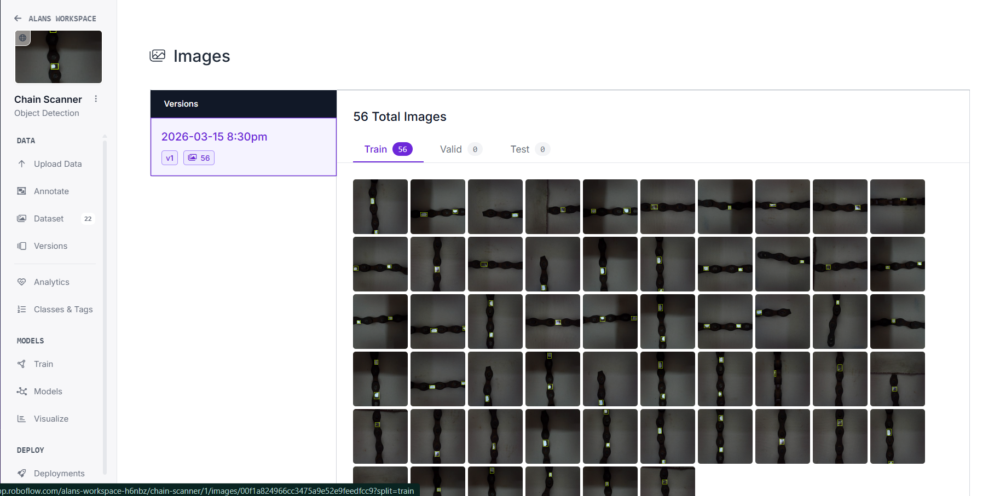
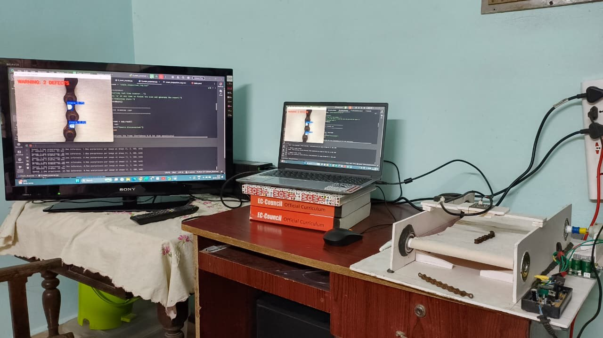

1. The Challenge.
Industrial metal chains — in conveyors, hoists, and heavy machinery — take continuous stress, load, and wear. Surface cracks form quietly, and manual visual inspection is still the default line of defense.
That default is slow, inconsistent under fatigue, and often misses small or early-stage cracks entirely — especially on chains moving at production speed. Left undetected, a single crack can mean equipment failure, safety risk, or costly downtime.
2. Engineering Architecture & Hardware Components.
The proposed system is an integrated mechatronic solution designed for autonomous industrial inspection. At the physical layer, the conveyor is powered by a high-torque Micro DC Geared Motor, selected for its ability to maintain constant linear velocity so the camera's frame rate stays synchronized with material throughput.
Speed is governed by a PWM Controller, regulating velocity without losing the torque needed to pull the interlocked chain — preventing slippage or jerkiness that would introduce motion blur into the image stream.
Power is stabilized via a 12V AC-DC SMPS, using high-frequency switching for efficiency while keeping a clean DC rail for the motor drivers and LED lighting, free of electrical noise that could degrade the camera feed.

Arducam Module: optical acquisition unit for high-fidelity frame extraction via UVC.

DC Geared Motor: regulated motion for chain transport through the inspection gate.

PWM Controller: duty-cycle speed regulation without losing torque.

12V AC-DC SMPS: a clean, noise-free power rail for the whole rig.
3. System Concept & Logic Sketch.

This sketch delineates the spatial constraints of the system. The enclosure is a rigid aluminium-and-cardboard composite, minimizing external interference and keeping lighting consistent and diffused — non-negotiable for accurate edge detection. The laptop is the central processing unit, running the YOLOv8 inference engine. Housing the Arducam at a fixed geometry keeps the focal distance constant, so the model never has to handle varying object distance, improving detection precision.
4. Detection Pipeline.
Every frame moves through the same six stages before a verdict is logged:
- Acquisition: the Arducam captures live frames under LED ring lighting as the chain moves.
- Region of interest: background and belt are cropped out, isolating the chain.
- Preprocessing: grayscale conversion plus Gaussian blur to cut noise.
- Edge detection: Canny edge detection exposes the chain's structural boundaries.
- Classification: YOLOv8-Nano scores irregular patterns against a 0.15 confidence threshold.
- Output: a bounding-box overlay, a voice alert, and a CSV log entry — pass or fail.
5. System Architecture & Flowchart Deep-Dive.

The system is logically partitioned into three functional domains. The Data Acquisition Tier is the physical sensory layer, turning mechanical movement into digital signal. The Processing Unit is the algorithmic core, where Python 3.11 manages the inference lifecycle. The Output Interface interprets the binary result — "Safe" vs "Defective" — and triggers the mechanical or acoustic response.

The flowchart depicts the conditional state-machine logic. It starts with initial calibration — loading the .pt weights. The scan loop is interrupt-driven: once model confidence exceeds the 0.15 threshold, the global chain_is_safe flag flips false and the buzzer output latches. Every detection is logged to CSV for archival verification.
6. Software & Tooling.
The full pipeline runs on Python 3.11 in PyCharm — no dedicated firmware, no microcontroller. Everything from frame capture to voice alert is one software stack.
- Ultralytics YOLOv8-Nano — inference engine
- OpenCV — capture, preprocessing, bounding-box overlay
- Roboflow — dataset annotation and versioning
- pyttsx3 — offline voice alerts
- CSV + datetime — inspection logging
7. Dataset & Training.
56 chain images, annotated and versioned in Roboflow, trained the YOLOv8-Nano model to tell cracked links from clean ones.

8. Results.
Every run is timestamped and logged automatically — no manual record-keeping. Below: a live detection catching two defects mid-scan, and the resulting log.

Live scan flagging a defect on-screen.

Auto-generated inspection log — date, time, crack count, PASS/FAIL.